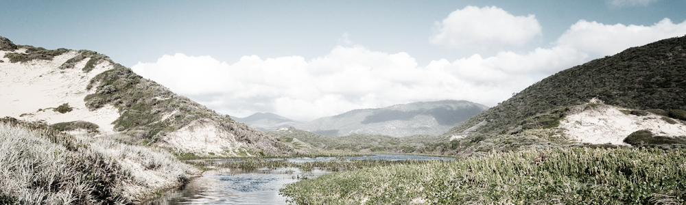

Journey to South America
Deep in the heart of South America, you'll discover a place like no other in the world. Dinosaurs roam free, and you'll be able to journey alongside Iguanodons, Stegosauruses, Allosauruses, Megalosaurues, and all of the greatest creatures inhabiting the land. Don't be afraid, though. You'll have a team of trained professionals guiding you through the treacherous wilderness
Amidst the vast landscape of South America lie several of our secured camp sites. These camp sites are optimally located for the viewing of the dinosaurs that inhabit the region. We use Jeep Terraine Vehicles as transport to and from the camp sites, as well as traveling by foot to the closer camp sites. If you've never hiked or camped before, we offer introductory classes that will get you prepared, in addition to the mandatory orientation for all participants.